0x00 在 DIFF 之前 …
在解释什么是 DIFF 之前，我们需要先挑选一个用于 DIFF 的 Ragnarok 登入器。
由于下面会用到 Nemo 做 DIFF，所以可以去 Nemo 的官网寻找最新的韩服客户端：
- List of all downloads
- Downloadable full clients
- Kro main/sakray
- 选择最新的 KRO 完整客户端 RAG_SETUP_xxxxxx.exe 下载
- 本地安装客户端
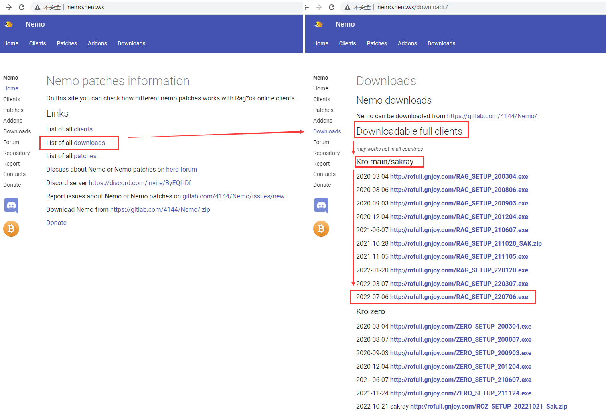
一般情况下，不要下载 Kro zero 客户端，除非你知道它和 Kro main/sakray 的区别
KRO:Sakray 和 KRO:Zero 的区别
根据 Gravity 发布的情报：
- 「RO」是指「Ragnarok Online」，等同于「KRO:Sakray」，是「主伺服器」
- 「RO:Zero」是指「Ragnarok:Zero」，是新部署的「经典伺服器」
「主伺服器」包含当前最新的内容（四转），但可能 Gravity 也觉得在三转之后职业系统平衡已经开始崩坏、四转之后更甚，所以「经典伺服器」应运而生。
简单来说「经典伺服器」就是改善旧 RO 当时的系统，并且兼顾游戏平衡的伺服器（目前只开放进阶二转，且最高只有 Lv.130）。
从媒体披露的数据来看，两者对比如下：
- Zero 基本免费
- Zero 的付费形态和 Sakray 不同
- Zero 排除了会直接影响平衡的付费道具
- Zero 商城主要贩卖服饰装备，预计会提供让游戏稍微便利一点的增值服务
- 不会因为开发 Zero 而疏忽正服 Sakray 的服务
- Zero 的客户端（登入器）和正服 Sakray 不同
但是前面所安装的客户端的启动程序 Ragexe.exe 是加壳的，无法定制改造。
故这里需要还需要下载 Nemo 已脱壳的 Ragexe.exe 启动程序：
- List of all downloads
- Downloadable exe
- yyyy-MM-dd_Ragexe_xxxxxxxxxx
- Download methods
- Method 1 (not recommended)
- Download get_yyyy-MM-dd_Ragexe_xxxxxxxxxx.exe and run it，这个是下载器
- 用下载器可以真正下载一个 yyyy-MM-dd_Ragexe_xxxxxxxxxx.exe 启动程序（已脱壳）
- yyyy-MM-dd_Ragexe_xxxxxxxxxx.exe 就是接下来要 DIFF 的对象
注意：
yyyy-MM-dd就是封包版本，对应服务端的 PACKETVERyyyyMMdd
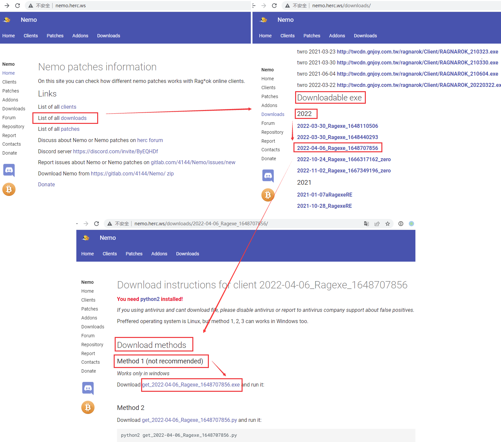
0x10 什么是 DIFF
DIFF 就是对前面的 yyyy-MM-dd_Ragexe_xxxxxxxxxx.exe 进行定制化改造、生成 Patch 的过程。当用其启动 KRO 客户端时，即可指向自己搭建的服务器进行游戏。
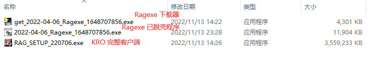
再进一步说，其实 DIFF 就是逆向修改 exe 程序的过程，有过使用 OllyDbg 经验的同学都会知道逆向是非常繁琐、且对专业知识要求非常高的事情，即使它已经被脱壳了。
因此针对 RO 逆向的工具 Nemo 应运而生，它可以让任何人都能很方便地改造 Ragexe.exe。
DIFF 的行业解释
「DIFF」这个术语来源于「difference」，意指显示两个文件或数据集之间的差异。
在软件开发和编程领域，「DIFF」常用于比较源代码文件的版本差异，例如常见的 git 版本差异文件就是 *.diff。
而当提到「patch client」或客户端补丁时，「DIFF」指的是生成一个补丁文件，该文件包含了从一个版本到另一个版本所需的所有更改。
在打补丁的过程中，「DIFF」文件是用来描述原始文件和修改后文件之间的变化，以便将这些变化应用到其他版本的文件上，从而实现更新而不需要替换整个文件。这种方法不仅节省了数据传输的带宽，也使得用户可以轻松地更新软件或系统。
0x20 如何 DIFF
- 安装 git
- 下载最新的 Nemo:
git clone https://gitlab.com/4144/Nemo.git - 运行 NEMO.exe
- 点击 Input Exe File 的 Browser 按钮，选择前面下载的 yyyy-MM-dd_Ragexe_xxxxxxxxxx.exe
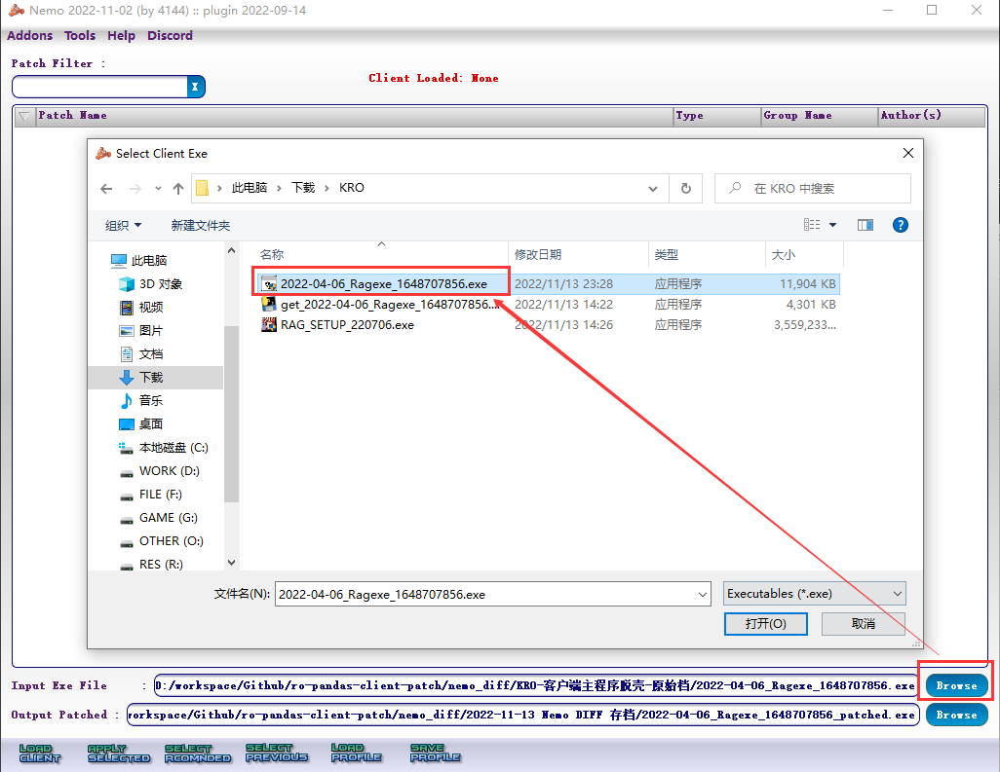
- 点击左下角 Load Client 按钮，自动读取 Ragexe 所有可定制的配置项：
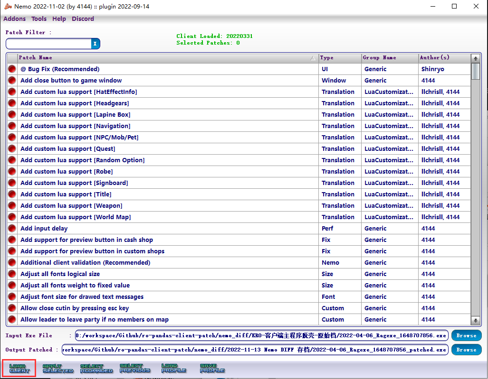
- 【可选】在菜单点击
Tools -> Change Language -> Chinese Traditional即可把 UI 不完全汉化
目前汉化只支持繁体，不支持简体，主要是因为只有 Patches_Chinese Traditional.ini 内有汉化文本。为了便于核对，下文还是以英文演示
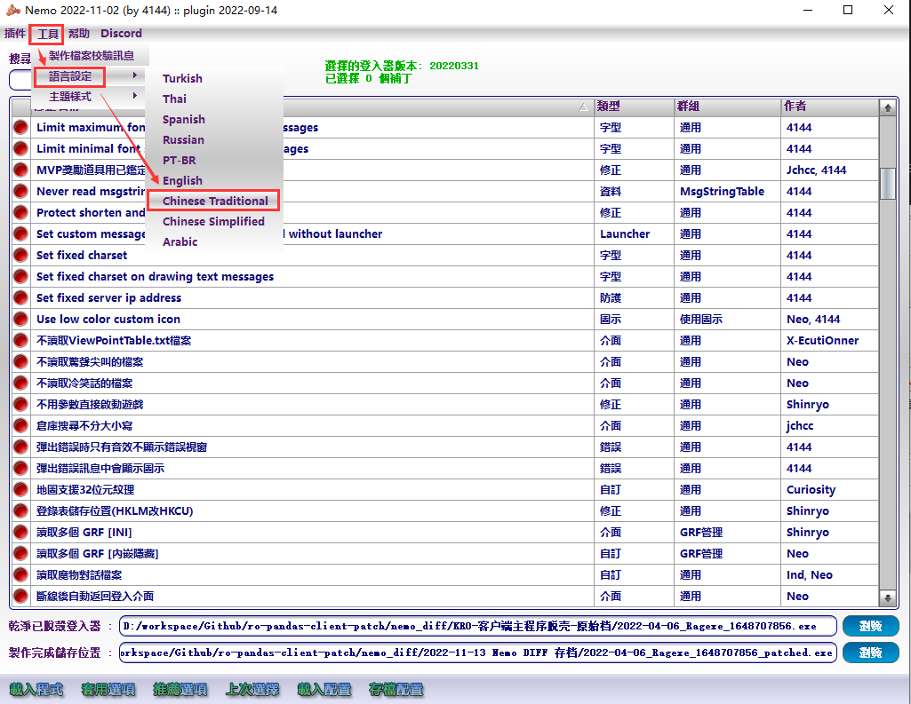
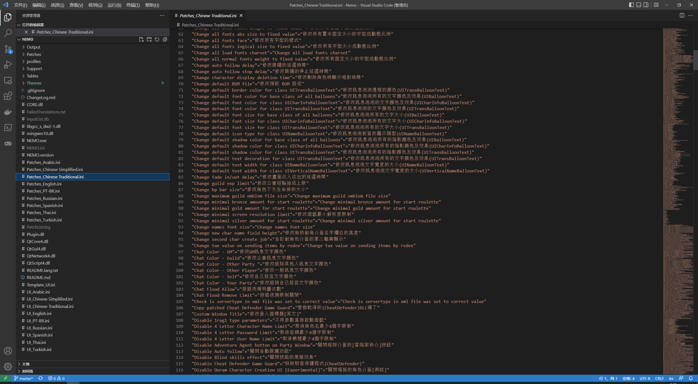
- 这些配置项，有些是开关、有些需要修改值，只要点击红灯使其变绿灯、即可生效
有些配置项是历史遗留的，会报错 missing ，因为已经找不到偏移地址了、就不要强求了
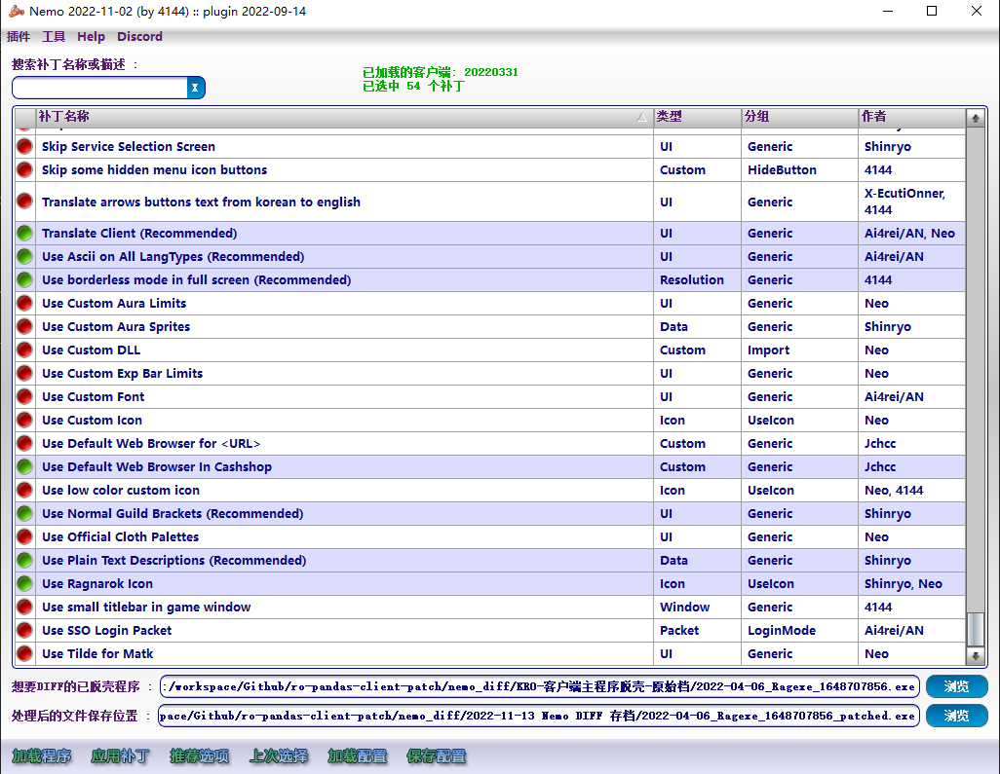
- 一般而言，第一次使用 NEMO 时基本都不知道哪些配置项有什么用，此时就可以通过 Load Profile 加载别人的配置项存档，再在其基础上进行修改：
配置项存档命名为 yyyy-MM-dd_Ragexe_xxxxxxxxxx_patched.exe.log
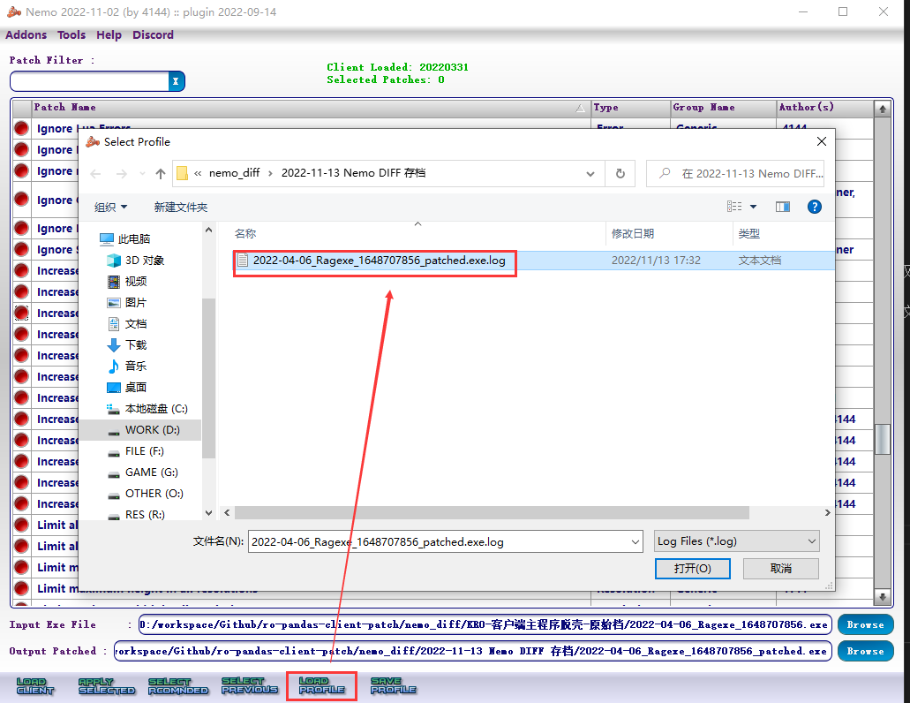
- 修改过配置项后，可以通过 Save Profile 保存配置项存档、以供以后使用：
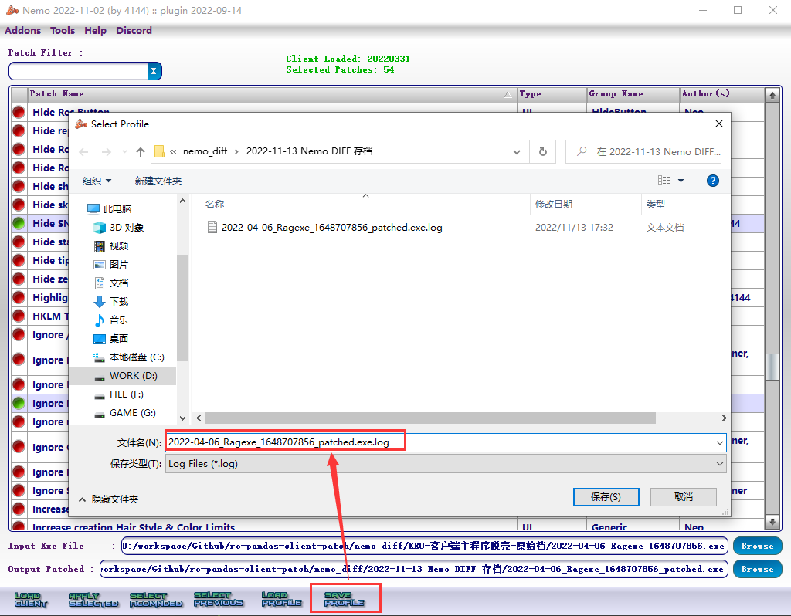
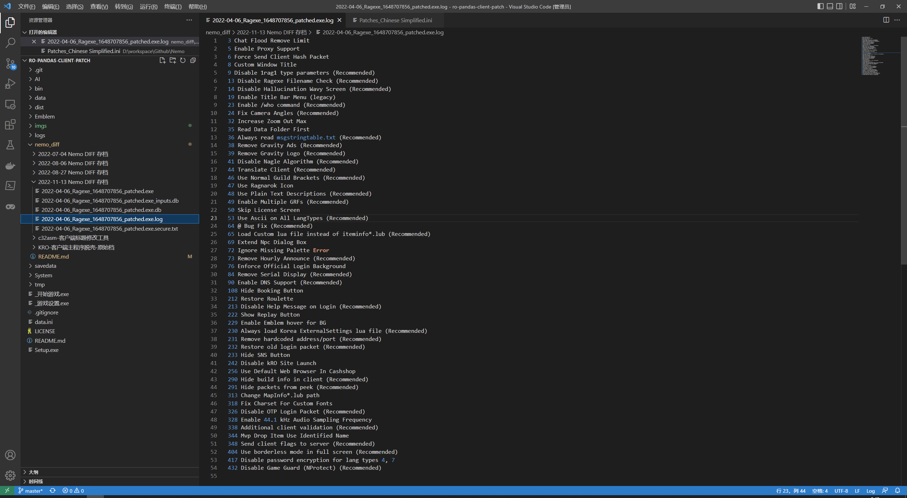
- 定制配置项完成后，点击 Output Patched 的 Browser 按钮，设置要生成的 exe 文件名（任意即可）
- 点击左下角的 Apply Selected 生成 Patch 补丁，得到经过 DIFF 改造的 RO 启动程序（将其放到 RO 客户端内即可运行）
Apply Selected 的同时也会保存配置项存档
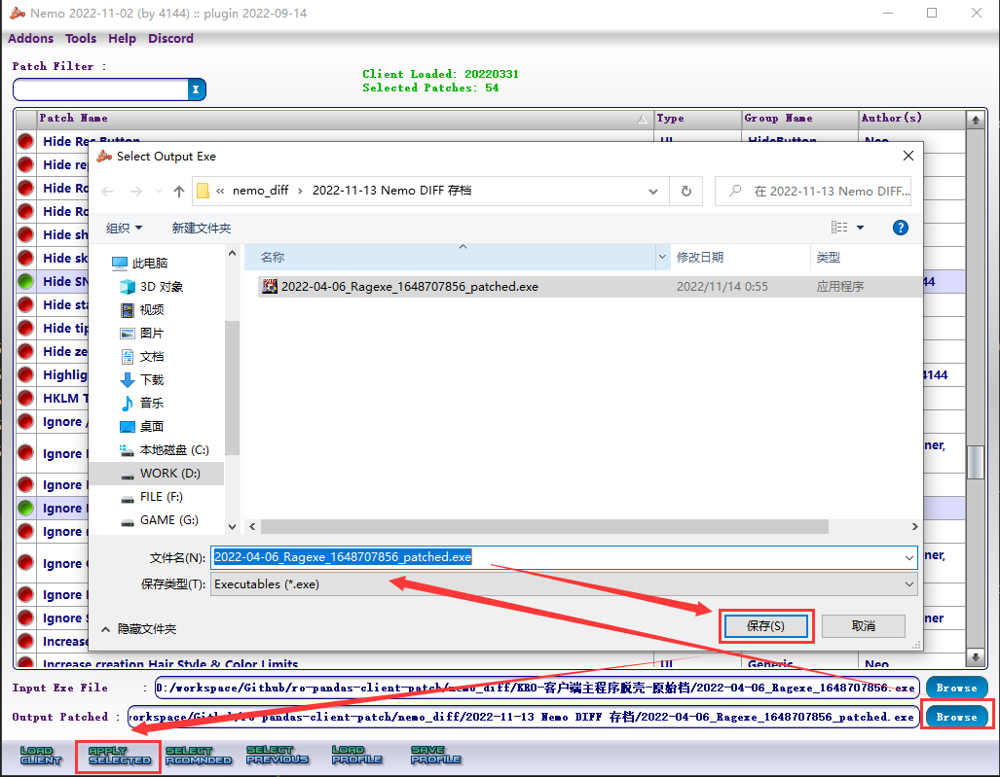
0x30 DIFF 常用配置项说明
配置项会随着 Nemo 更新而变化，这里只罗列比较重要的常用配置项：
| 配置项 | 说明 | 备注 |
|---|---|---|
| Chat Flood Allow | 重复发言的限制次数 | - |
| Chat Flood Remove Limit | 移除重复发言限制 | 若启用则 Chat Flood Allow 失效 |
| Enable Proxy Support | 启用代理服务器 | RO 的客户端在直连到服务器端后，服务端会返回真实 IP 给客户端，客户端会自动修改连接用的 IP。 但若服务端打开了配置 hide_server_ipaddress、或藏在 nginx、docker 等后面，返回的 IP 就是服务端的局域网 IP 导致客户端无法访问。此选项打开后，客户端不再理会服务端返回的 IP，仅使用 clientinfo.xml 中配置的 IP |
| Enable DNS Support (Recommended) | 支持域名解析 IP | 启用此配置项后，在 clientinfo.xml 里面配置 <address> 的时候，支持配置域名，而不是仅仅是 IP 地址。 |
| Always load Korea ExternalSettings lua file (Recommended) | 使用韩版的内部配置文件 externalsettings_*.lub |
该配置文件目前主要修改两个配置： 1. 是否开启猫族人物创建: MakeableRace = { Doram = true }2. web 服务器地址 AssistAddr = "IP:3000"（用于获取人物数据和公会图标，若服务不通时，登入地图后聊天框会提示“读取账号设定数据时发生错误”） |
| Remove hardcoded address/port (Recommended) | 移除硬编码的 IP 端口 | - |
| Force Send Client Hash Packet | 发送客户端完整性校验码 | 可以强制客户端发送登入器 Ragexe.exe 的 MD5 HASH 给服务端，以便服务端确认客户端是否有被玩家篡改过。 此外也有在每次 DIFF 后提示玩家需要升级客户端的效果。 此机制需要服务端打开 client_hash_check 开关才可以正常使用，详见下文安全机制配置指引 |
| Additional client validation (Recommended) | 验证登入器的有效性 | - |
| Disable Ragexe Filename Check (Recommended) | 移除 exe 登入器名称检测 | 韩服会强制检查游戏登入器的名字必须是 Ragexe.exe，如果不是这个名字则无法启动游戏 |
| Disable 1rag1 type parameters (Recommended) | 无需使用 1rag1 参数来启动游戏主程序 | 大多数时候我们可能希望玩家双击登入器就可以启动游戏，这种情况下就需要启用此配置项。 但是有时候我们又不希望玩家直接启动游戏主程序，而是应该先启动更新器，再通过更新器来启动游戏主程序，这样可以强迫玩家每次启动游戏都更新。 此时只要不勾选此配置项，玩家直接双击登入器是无法启动游戏的，必须在启动时带上 1rag1 参数才会启动游戏。 |
| Disable Hallucination Wavy Screen (Recommended) | 移除幻觉时的波浪效果 | 这个异常状态一般是小巴风特等会施展， 新版本不是波浪效果，而是上下左右颠倒， 因为会导致客户端非常卡，建议关闭 |
| Use Ragnarok Icon | 使用 RO 预设图标 | 使用仙境传说默认图标 |
| Enable Title Bar Menu (legacy) | 启用标题栏菜单 | 关闭后会屏蔽 Windows 标准窗口的顶栏。 包括：窗口名称、图标，最小化、最大化、关闭按钮 |
| Use borderless mode in full screen (Recommended) | 使用无边框窗口的全屏模式 | - |
| Custom Window Title | 自定义游戏窗口标题 | 仅支持修改为英文，搭配 c32asm 工具可以修改为中文 |
| Enable /who command (Recommended) | 开启 /who 命令 |
- |
| Fix Camera Angles (Recommended) | 修正镜头角度（无限制） | 在游戏中我们可以通过按住 Shift，然后用鼠标右键按住地面来拖动镜头角度。 但是一般情况下只会被限制在很小一个度数内，通过这个选项可以扩大镜头角度，让你最夸张的情况下可以把镜头拉到几乎平行 |
| Increase Zoom Out Max | 取消视野范围限制 | 用鼠标滚轮可以放大缩小游戏内的场景，若启用此选项，可以将滚动距离扩大到极限，使你在游戏中可以用滚轮把镜头拉得非常远 |
| Read Data Folder First | 优先读取 data 文件夹 | 当客户端读取数据的时候，优先读取 data 目录下的内容，当 data 目录下读取不到内容后再去 GRF 文件中读取。 如果不勾选此选项，只会读取 GRF 文件中的内容。 |
| Always read msgstringtable.txt (Recommended) | 总是读取 msgstringtable.txt |
游戏内大部分【文本提示】或【界面显示的内容】都是通过此文件配置的 |
| Remove Gravity Ads (Recommended) | 移除 Gravity 的广告 | 移除重力社的广告 |
| Remove Gravity Logo (Recommended) | 移除 Gravity 的 Logo | 移除服务器线路选择界面，以及在登录界面的重力社 Logo |
| Disable Nagle Algorithm (Recommended) | 关闭 Nagle 网卡缓冲 | 禁止客户端使用 Nagle 算法，这个算法会消耗更多的网络流量，来降低网络延迟。 一般都会启用此选项（也就是说我们更希望牺牲一点点延迟，来让 RO 客户端更省流量，这样服务器的带宽压力会稍微小一些） |
| Remove Hourly Announce (Recommended) | 关闭健康游戏提示 | 当玩家持续游戏 1 个小时或者以上时候，游戏内会出现一个公告，告诉玩家应该下线休息了 |
| Translate Client (Recommended) | 翻译登入器写死的韩文 | 翻译客户端中的一些内嵌文本，游戏有一些提示文本是写死在 exe 中的，比如捕捉宠物时候的 “请选择要捕捉的魔物” 提示，默认情况下都是韩文。 当勾选此配置项后，Nemo 会根据它安装目录下的 PatchesTranslateClient.txt 文件，将韩文的内容翻译成英文 |
| Skip License Screen | 跳过授权条款界面 | 当 clientinfo.xml 中的 <langtype> 为 4 或 6 的时候，启动游戏时会显示一个“协议窗口”，启用此配置项可以不显示该协议窗口 |
| Use Normal Guild Brackets (Recommended) | 改变公会名称边框 | 当 clientinfo.xml 中的 <langtype> 为 0 的时候，公会的名称（显示在角色名字旁边）会用日本格式的方括号括起来。当启用此配置项时，可以强制游戏使用标准的英文方括号 |
| Use Ascii on All LangTypes (Recommended) | 使用 ASCII 编码来显示文字 | 启用此选项可以让客户端无论 clientinfo.xml 中的 <langtype> 是多少、或字体是什么，都一律使用 ASCII 编码来展现字符串。此选项一般都会启用 |
| Fix Charset For Custom Fonts | 修正定制字体的元编码 | - |
| Use Plain Text Descriptions (Recommended) | 使用原编码读取文字档案 | 使用系统编码读取文件，当定制过 data 时建议开启，修改内容使用 GBK 存储 |
| Enable Multiple GRFs (Recommended) | 通过 DATA.INI 读取多个 GRF |
客户端会根据 DATA.INI 中配置的顺序来加载一个或者多个 GRF 文件 |
| @ Bug Fix (Recommended) | 修复 @ 符号的 Bug | 修正一个在聊天时使用 @ 符号的问题。 此选项一般都会启用 |
| Extend Npc Dialog Box | 增加 input 的字数限制 | 和 NPC 对话时，有时候会让玩家输入文字，默认情况下最多只能输入2052 个字符。 启用此配置项后，最多可以输入 4096 个字符 |
| Ignore Missing Palette Error | 忽略缺少染色档案的错误 | 忽略调色板文件的丢失错误 若启用此配置项，那么碰到丢失调色板文件时，就不会出现报错提示了 |
| Enforce Official Login Background | 使用官方登入背景 | - |
| Remove Serial Display (Recommended) | 移除右下角序号提示 | 移除服务器选择界面、登录界面的序列号显示。 这个序列号在没有启用 Remove Gravity Ads 选项时，会被显示出来，在界面底部被黑条挡住，如果按住黑条往下移动，可以在右下角看到序列号。如果启用了 Remove Gravity Ads 选项，那么这个序列号也会被一起移除掉 |
| Hide Booking Button | 隐藏【招募】按钮 | - |
| Hide SNS Button | 隐藏【TWITTER】按鈕 | - |
| Restore Roulette | 恢复右上方【转盘】按鈕 | - |
| Disable Help Message on Login (Recommended) | 关闭登入游戏的教学提示 | - |
| Show Replay Button | 登入游戏时显示播放录影按钮 | - |
| Enable Emblem hover for BG | 在战场地图显示公会图标 | - |
| Disable kRO Site Launch | 更新器不会修改游戏设置存档 | - |
| Use Default Web Browser In Cashshop | 使用预设浏览器开启内置商城的链接 | - |
| Hide build info in client (Recommended) | 隐藏客户端构建信息 | |
| Restore old login packet (Recommended) | 恢复旧版的登录封包 | - |
| Hide packets from peek (Recommended) | 隐藏封包信息 | - |
| Disable packets id encryption | 禁用封包加密 | 禁止韩服自带的封包加密机制，非必要建议关闭。 否则需要服务端配置封包版本和三个封包密钥，不然无法建立连接 |
| Enable packets id encryption | 设置封包加密密钥 | 需要关闭 Disable packets id encryption，同时设置与服务端一模一样的三个封包加密密钥。若不使用封包加密机制，需把三个密钥设置为 00000000 覆盖原密钥。详见下文安全机制配置指引 |
| Send client flags to server (Recommended) | 发送客户端类型封包到服务端 | - |
| Disable OTP Login Packet (Recommended) | 关闭 OTP 登入封包 | OTP（One Time Password）是造成新版登入器断线后无法重连的主要原因 |
| Disable Game Guard (NProtect) (Recommended) | 移除反外挂系统 | 韩服的反外挂系统，私服用不了，会导致游戏无法启动，必须关闭 |
| Disable password encryption for lang types 4, 7 | 取消密码加密 | 当 clientinfo.xml 中的 <langtype> 为 4 或 7 时，取消密码加密 |
Load Custom lua file instead of iteminfo*.lub (Recommended) |
修改 iteminfo*.lub 文件路径 |
当需要定制 System/iteminfo*.lub 的道具描述文件时，可以编辑此配置项 |
Change MapInfo*.lub path |
修改 mapinfo*.lub 文件路径 |
当需要定制 System/mapinfo*.lub 的地图描述文件时，可以编辑此配置项。该文件主要是控制进入地图时所浮现地图标题 |
| Disable Map sign display | 关闭进入地图时显示的地图标题 | 除此以外，游戏内的【ESC】->【设置】->【标记地图名称】也会影响过图时是否显示地图标题 |
| Enable 44.1 kHz Audio Sampling Frequency | 提升游戏音质 | - |
| Mvp Drop Item Use Identified Name | MVP 奖励道具使用已鉴定名称显示 | - |
| Set fixed charset on drawing text messages | 使用固定的编码绘制窗体文字 | 0: 英文; 1: 默认（跟随系统）; 129: 韩文; 204: 俄文; 134: 简中; 136: 繁中 |
所有配置项参考官方 [Patches_Chinese_Traditional.ini)[https://gitlab.com/4144/Nemo/-/blob/master/Patches_Chinese%20Traditional.ini] 的说明
0x40 修改窗口标题（中文）
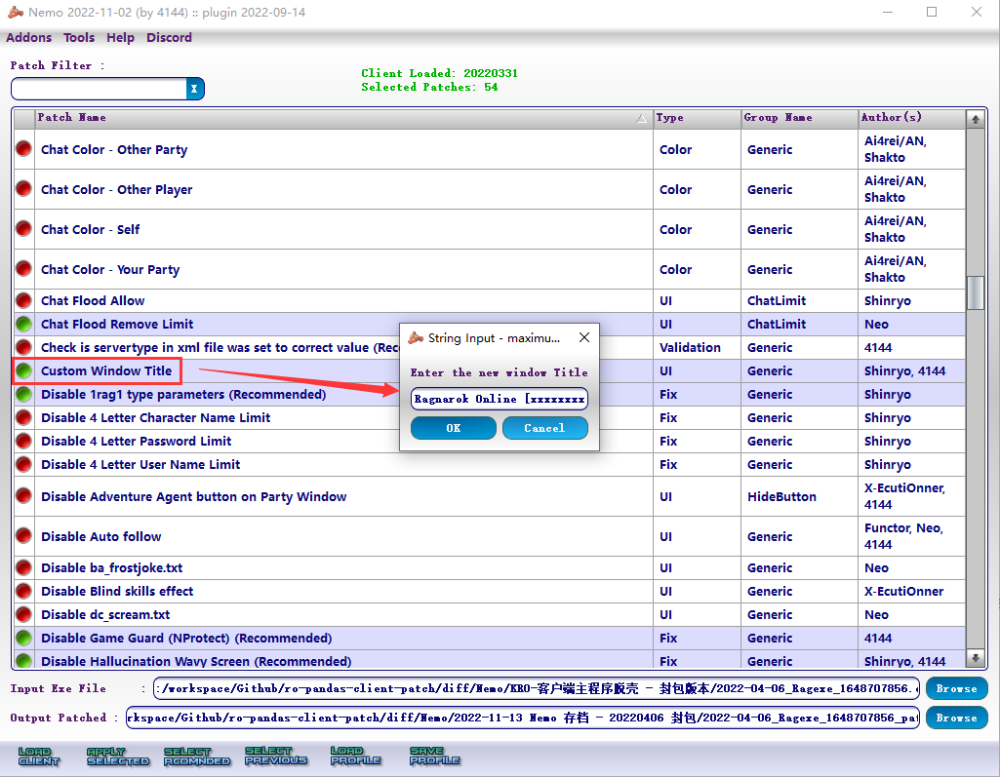
DIFF 虽然可以通过 Custom Window Title 选项修改，但是只允许填入英文（若输入中文会导致标题乱码）。
但并非没有办法改为中文标题。
DIFF 时首先输入中文的占位符，如 Ragnarok Online [xxxxxxxx]，其中 xxxxxxxx 是期望填入中文的位置。
由于 Windows 中文系统默认是使用 GBK 编码，而 GBK 一个中文的字节长度 = 两个英文字符的字节长度，所以此处有 8 个 x 相当于预留 4 个中文字的位置。
预留的长度可以根据实际情况变化
保存 DIFF 生成的 exe 后：
- 用 c32asm 以【十六进制文件打开】该 exe 文件
- 搜索占位符
[xxxxxxxx]
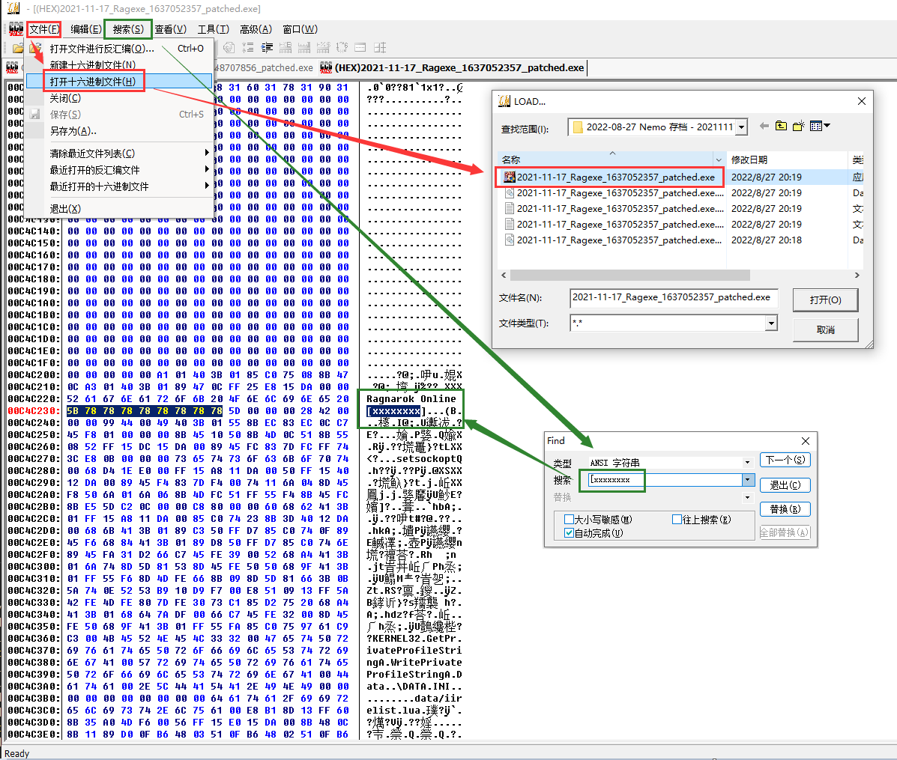
- 在任意文本编辑器写好中文标题，如
随缘仙境 - 选中占位符
[xxxxxxxx]，把中文标题粘贴进去完成替换
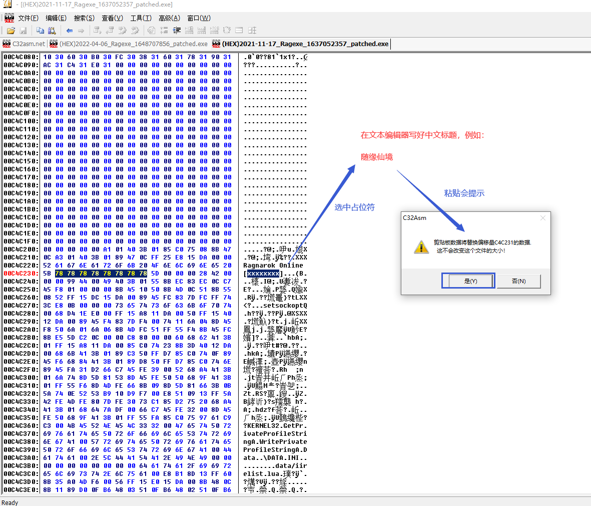
- 虽然在编辑器看到的是乱码，但是实际窗口标题已经是中文了
十六进制编辑相当于反汇编，修改的内容不允许越界，否则会覆写后面的内容导致 exe 异常，DIFF 预留了多少个中文占位符，这里就最多就只能用多少个
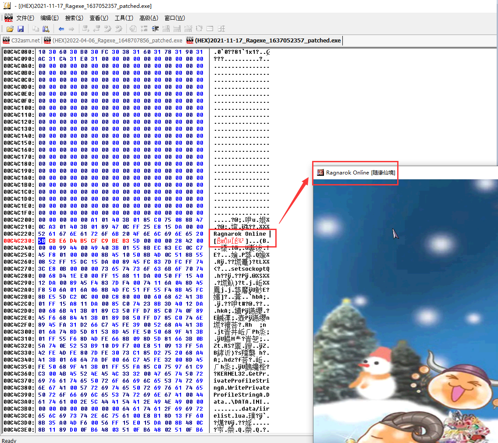
0x50 添加安全机制
0x51 添加封包机制
所谓的封包，就是服务端和客户端通讯之间的一组协议，在 RO 的基本封包中，包含了一个动作指令和一些附加信息。
前面 DIFF 前下载的 yyyy-MM-dd_Ragexe_xxxxxxxxxx.exe 文件中，yyyy-MM-dd 就是封包版本，对应可以在服务端的 defines_pre.hpp 中配置 #define PACKETVER yyyyMMdd
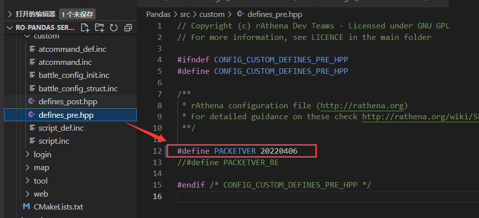
但是封包版本只是为了确保服务端和客户端的是配套的，默认情况下没有封包密钥，所以并不安全，很容易被类似 WPE 的封包重发器破解，这样就无法防止外挂了。
为此，可以使用 封包密钥生成器 生成高强度的封包密钥，并在 DIFF 时设置到客户端 exe 中：
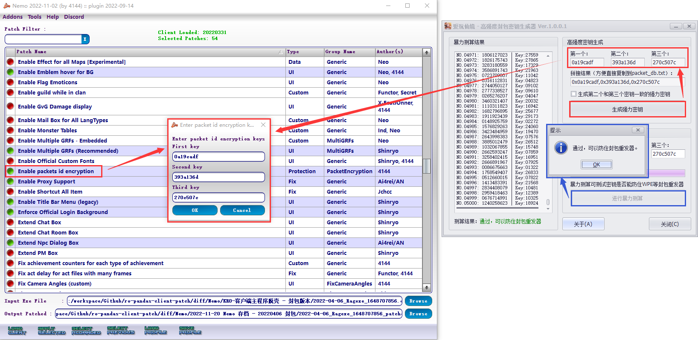
同时服务端的 packets.hpp 需要配置一模一样的三个封包密钥并重新编译：
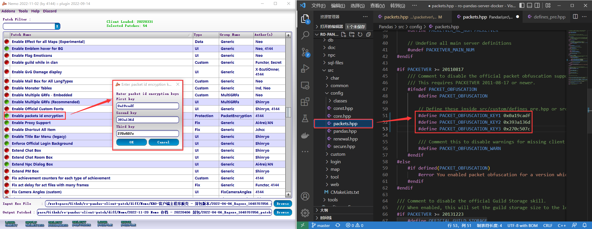
此后只有封包密钥配套的客户端才能连接到服务端，否则服务端会拒绝连接：
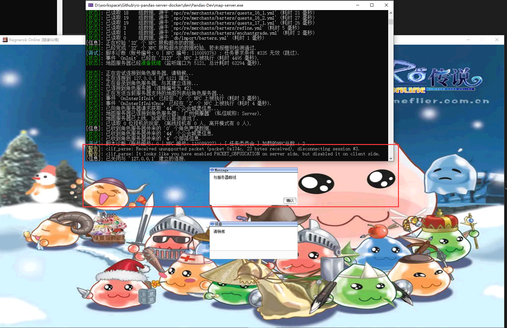
DIFF 时如果不想使用封包机制，需要开启
Disable packets id encryption配置项，某些 Nemo 版本还需要通过Enable packets id encryption把三个封包密钥设置为00000000
0x50 添加文件校验机制
此外，如果想进一步增加安全性，DIFF 时可以启用 Force Send Client Hash Packet 配置项，强制发送客户端完整性校验码，避免恶意玩家篡改客户端登入器 Ragexe.exe。
Windows 下，Ragexe.exe 的文件 MD5 可以使用 PowerShell 直接生成：
Get-FileHash ${FILEPATH} -Algorithm MD5 | Format-List
然后把 MD5 配置到服务端 login_athena.conf 的 client_hash 即可（注意 client_hash_check 需要同时打开）
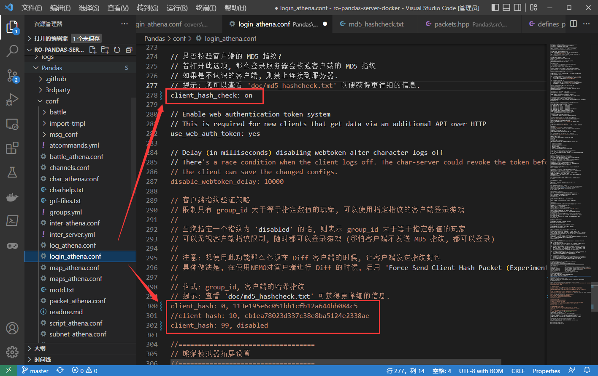
此后当客户端登入器的 MD5 不正确时，服务端会拒绝登录：
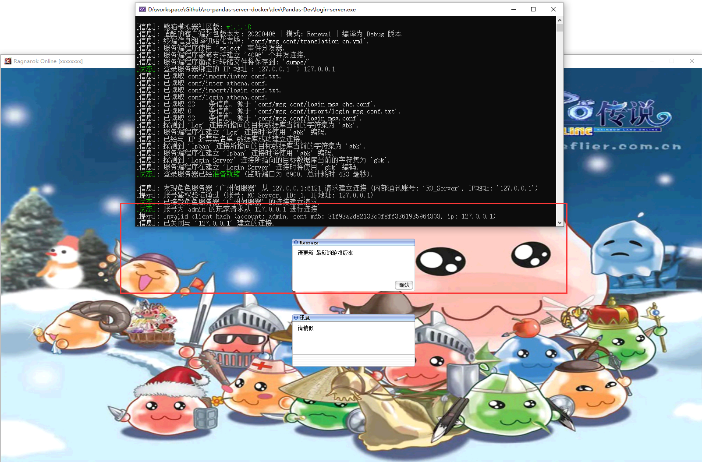
client_hash可以根据角色权限等级设置是否校验，例如 GM 不校验，详见服务端的说明文档